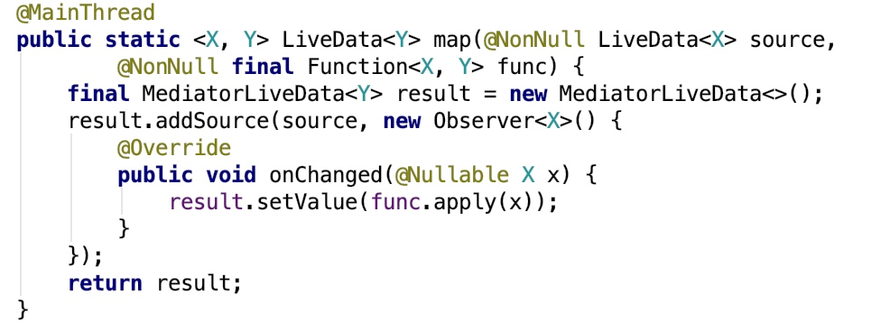
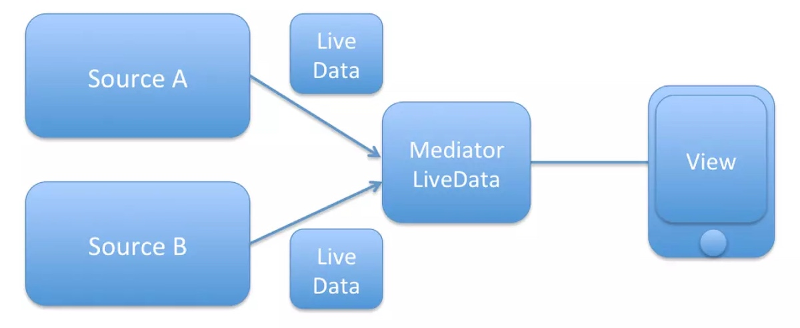
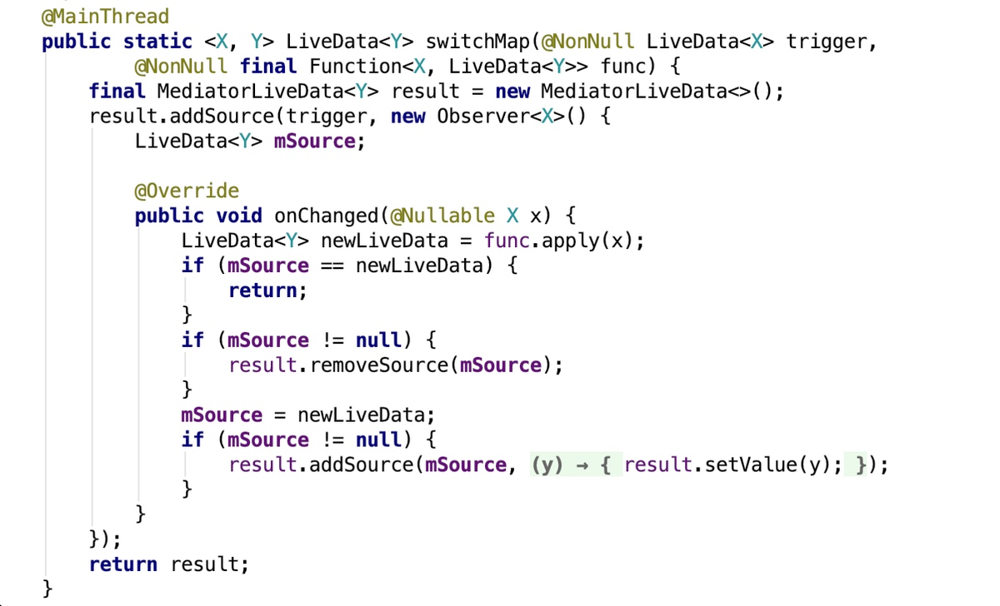
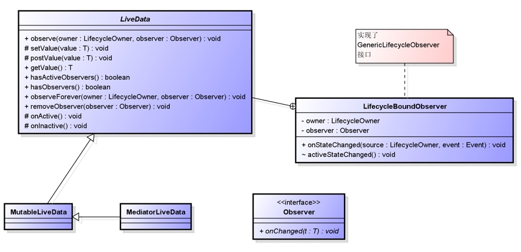
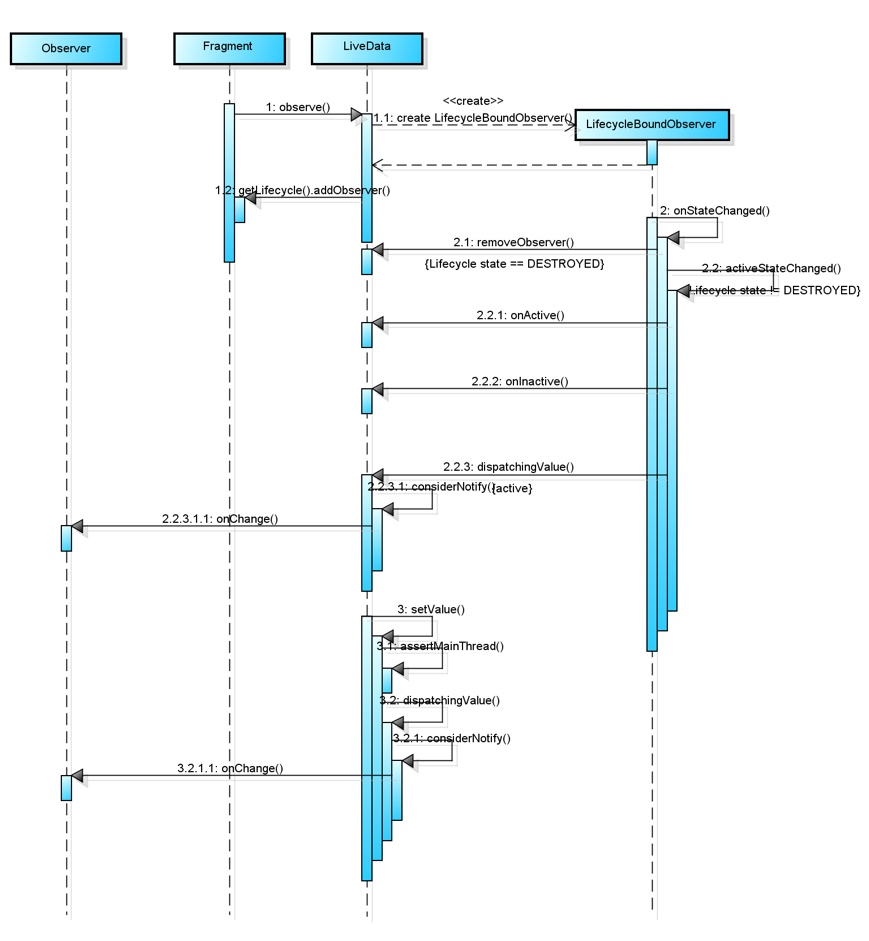
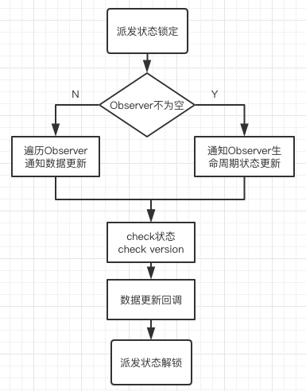
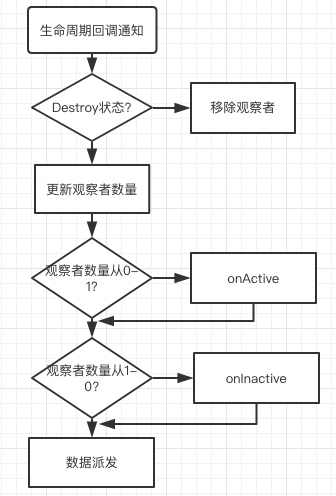
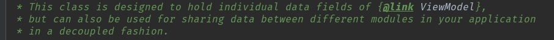

八卦暖场环节
引：从Google AAC 和 MVVM开始说起
LiveData推出于Google I/O 2017 的 architecture components ，一般和ViewModel、Room、LifeCycle同时介绍，尤其是LifeCycle和ViewModel。最终核心还是期望这些组件能用有效的支持在Android端实现MVVM。
MVP vs MVVM
MVP 是MVC模式的变种，它已经存在了数十年了。
Android领域广泛应用MVP源于Google在2016年年初推出的Android Architecture Blueprints
MVP和MVC的核心区别在于数据流传输和组织方式，内在思想是面向接口编程，代价是大量胶水代码。

在2005年，微软的WPF和SL架构师John Gossman在他的博客中公开了MVVM模式。是之前PM（Presenter Model）模式的演化。
不像MVP，ViewModel 不需要View的引用。View绑定到ViewModel中的一个属性。这个属性展示了Model对象的数据以及View的其它状态特性。由于ViewModel 对象被设置为View的DataContent，View和ViewModel之间的绑定易于构建。如果ViewModel 里面的属性值改变了，那些新的值会通过数据绑定传递到View。当用户点击View的一个按钮，ViewModel 里面的一个命令就会执行完成需要的动作。ViewModel而不是View执行了Model数据的修改。View类不知道Model类的存在，ViewModel 和Model也不知道View。实际上，Model完全不知道ViewModel和View存在的事实。
MVVM：“Keeping UI code simple and free of app logic in order to make it easier to manage”
一种组件逻辑分离的架构模式，让UI部分逻辑更加内聚。
注：不是名字中有ViewModel、VM的就是MVVM架构，就像有的名字中带Presenter不一定就是MVP，它很可能只是想写一个MVP架构。


MVVM的关键在于双向绑定，LiveData就是用于解决这个。
ViewModel组件本次不表，建议后续研究，本次不做发散。
官方概念环节
一、（What）什么是LiveData？
简单说就是LifeCycle在观察者模式中的结合运用。
LiveData有很多好处（美团曾经用它替换EventBus)
- UI和实时数据保持一致 因为LiveData采用的是观察者模式，这样一来就可以在数据发生改变时获得通知，更新UI。
- 避免内存泄漏 观察者被绑定到组件的生命周期上，当被绑定的组件销毁（destroy）时，观察者会立刻自动清理自身的数据。
不会再产生由于Activity处于stop状态而引起的崩溃 因为根本收不到通知
不需要再解决生命周期带来的问题 LiveData可以感知被绑定的组件的生命周期，只有在活跃状态才会通知数据变化。
实时数据刷新 当组件处于活跃状态或者从不活跃状态到活跃状态时总是能收到最新的数据。
解决Configuration Change问题 在屏幕发生旋转或者被回收再次启动，立刻就能收到最新的数据。->依赖ViewModel
鉴于LiveData的特性（结合MVVM使用），如果过去习惯使用RxJava来做响应式编程，那依然继续用，唯一区别就是alloc和dealloc记得注册和反注册。
有趣的使用环节
二、（How）LiveData怎么用？
个人习惯，看源码 先使用->工具类->最常用扩展类->核心类
普通用法（ActionDataManager用法）
如何合理的使用ActionDataManager
- Tips1: LiveData的Observe具有立即回调的特性，所以不需要单独的配置初始化
- Tips2: LiveData的setValue需要主线程操作，否则用postValue，但在切线程的时候getValue值不正确
默认LiveData是abstract class，setValue和postValue都是protected修饰，大多数时候我们使用MutableLiveData，唯一区别是该类的setValue和postValue是public。
LiveData<ActionData> liveData = ActionDataManager.INSTANCE.getActionLiveData(getId());
if (liveData != null) {
liveData.observe(AbsUgcFeedFragment.this, new Observer<ActionData>() {
@Override
public void onChanged(@Nullable ActionData actionData) {
// do some thing
}
});
}
上述代码中就展示了如何使用LiveData，我们只需要定义观察到数据变化后的操作，并在适当的时机触发数据更新。
- observe后onChanged会立即回调
- LiveData的更新只会在LifecycleOwner的lifeCycle在State为RESUMED回调，其他情况不回调
- 通知变化会在回到前台（RESUMED）后一起回调
- destroyed后会自动移除observer
如果不需要生命周期管理，可以使用LiveData#observeForever，但需要手动removeObserver：
liveData.observeForever(new Observer<ActionData>() {
@Override
public void onChanged(@Nullable ActionData actionData) {
// do some thing
}
});
还有一些推荐的高级用法
"以下三个用法和代码都比较精妙"
1、Transformations#map()
用于是把一个数据类型变换为另外一个数据类型。
val userLiveData: LiveData = UserLiveData() // value是User，有name和lastname两属性
val userName: LiveData = Transformations.map(userLiveData) {
user -> "${user.name} ${user.lastName}"
} // value是String
源码实现：

这里用到了 LiveData 的另一个子类 MediatorLiveData。接下来看一看这是个什么东西。
MediatorLiveData
从 Transformations#map() 源码中可以看到，MediatorLiveData 有一个 MediatorLiveData#addSource() 方法，这个方法改变了数据内容。 也就是说，我们可以通过 MediatorLiveData 将多个 LiveData 源数据集合起来，如下图所示：

一段Demo
class MediatorLiveDataFragment : Fragment() {
private val changeObserver = Observer<String> {
value -> value?.let { txt_fragment.text = it }
}
override fun onAttach(context: Context?) {
super.onAttach(context)
val mediatorLiveData = MediatorLiveData<String>()
mediatorLiveData.addSource(getliveDataA()) {
mediatorLiveData.value = "A:$it"
}
mediatorLiveData.addSource(getliveDataB()) {
mediatorLiveData.value = "B:$it"
}
mediatorLiveData.observe(this, changeObserver)
}
// .. some other Fragment specific code ..
}
特征：
- 任何一个LiveData的更新都会回调该source的Observer（用了observeForever，但生命周期时机和真实的LifeCycleOwner一致）
- 不可见状态同时修改LiveData源，后add的source后调用
用途：同时监听网络回来数据的LiveData和数据库数据LiveData
Transformations#switchMap()
把一个数据变化为另外一个 LiveData 。
特征：根据SwitchLiveData（用于控制的LiveData）动态切换LiveData。
用途：登录逻辑（选个开关，换成密码登录、验证码登录等等）
源码实现：

枯燥无味的代码环节
三、（Why）LiveData怎么实现的？
此处需要一些前置概念，Lifecycle、LifecycleOwner、Lifecycling、FullLifecycleObserver、GenericLifecycleObserver、LifecycleObserver
Lifecycling整个框架设计比较有趣，建议研究下，避免发散，本次不表。
模版方法
onActive()：方法在LiveData至少有一个活跃的observer（RESUME）的时候才会调用onInactive()：当LiveData没有一个活跃的观察者的时候这个方法会被调用 上述方法会在任何一个LifecycleOwner的state改变时尝试check一次。
MediatorLiveData就使用了上述时机。
重要Public方法
setValue()：即时更新，需要在主线程postValue()：下一个main message loop更新。不及时observe()：望文生义，observe会立即收到change回调observeForever()：望文生义removeObserver()：望文生义，remove操作不会造成change回调removeObservers()：望文生义
类图：

调用时序图：

下面结合LiveData的两个步骤分析，为什么LiveData具有Google给出的这么多特点。按照使用来说，LiveData主要是分为订阅和通知两个步骤。
订阅
@MainThread
public void observe(@NonNull LifecycleOwner owner, @NonNull Observer observer) {
if (owner.getLifecycle().getCurrentState() == DESTROYED) {
// ignore
return;
}
LifecycleBoundObserver wrapper = new LifecycleBoundObserver(owner, observer);
ObserverWrapper existing = mObservers.putIfAbsent(observer, wrapper);
if (existing != null && !existing.isAttachedTo(owner)) {
throw new IllegalArgumentException("Cannot add the same observer"
+ " with different lifecycles");
}
if (existing != null) {
return;
}
owner.getLifecycle().addObserver(wrapper);
}
class LifecycleBoundObserver extends ObserverWrapper implements GenericLifecycleObserver {
@NonNull final LifecycleOwner mOwner;
...
@Override
boolean shouldBeActive() {
return mOwner.getLifecycle().getCurrentState().isAtLeast(STARTED);
}
@Override
public void onStateChanged(LifecycleOwner source, Lifecycle.Event event) {
if (mOwner.getLifecycle().getCurrentState() == DESTROYED) {
removeObserver(mObserver);
return;
}
activeStateChanged(shouldBeActive());
}
...
@Override
void detachObserver() {
mOwner.getLifecycle().removeObserver(this);
}
}
订阅动作做了两件事
- 将观察者对象与LifecycleOwner绑定成一个LifecycleBoundObserver，并形成观察者与LifecycleBoundObserver的映射；
- LifecycleBoundObserver观察LifecycleOwner的生命周期。
这就实现了Observer是数据观察者，LifecycleBoundObserver是生命周期观察者，观察LifecycleOwner的生命周期。
通知
通知有两种形式，分别是数据变化通知和LifecycleOwner生命周期变化通知。
数据变化通知：
setValue是在主线程执行的数据更新方法，postValue是在异步线程执行的数据更新方法，这两个方法最后都调用到了dispatchingValue(null)。
private void dispatchingValue(@Nullable ObserverWrapper initiator) {
if (mDispatchingValue) {
mDispatchInvalidated = true;
return;
}
mDispatchingValue = true;
do {
mDispatchInvalidated = false;
if (initiator != null) {
considerNotify(initiator);
initiator = null;
} else {
for (Iterator<Map.Entry<Observer<T>, ObserverWrapper>> iterator =
mObservers.iteratorWithAdditions(); iterator.hasNext(); ) {
considerNotify(iterator.next().getValue());
if (mDispatchInvalidated) {
break;
}
}
}
} while (mDispatchInvalidated);
mDispatchingValue = false;
}
private void considerNotify(ObserverWrapper observer) {
if (!observer.mActive) {
return;
}
if (!observer.shouldBeActive()) {
observer.activeStateChanged(false);
return;
}
if (observer.mLastVersion >= mVersion) {
return;
}
observer.mLastVersion = mVersion;
//noinspection unchecked
observer.mObserver.onChanged((T) mData);
}
执行流程如下

LifecycleOwner的生命周期变化通知：
class LifecycleBoundObserver extends ObserverWrapper implements GenericLifecycleObserver {
@Override
public void onStateChanged(LifecycleOwner source, Lifecycle.Event event) {
if (mOwner.getLifecycle().getCurrentState() == DESTROYED) {
removeObserver(mObserver);
return;
}
activeStateChanged(shouldBeActive());
}
}
private abstract class ObserverWrapper {
void activeStateChanged(boolean newActive) {
if (newActive == mActive) {
return;
}
// immediately set active state, so we'd never dispatch anything to inactive
// owner
mActive = newActive;
boolean wasInactive = LiveData.this.mActiveCount == 0;
LiveData.this.mActiveCount += mActive ? 1 : -1;
if (wasInactive && mActive) {
onActive();
}
if (LiveData.this.mActiveCount == 0 && !mActive) {
onInactive();
}
if (mActive) {
dispatchingValue(this);
}
}
}
LifecycleBoundObserver注册了LifecycleOwner的生命周期监听，当实现了LifecycleOwner的组件生命周期发生变化时，Lifecycle回调onStateChanged，大致流程如下。

当观察者数量从0到1时调用onActive，从1到0调用onInactive，最后走数据派发。举例，观察者组件从后台切到前台时，mActive状态从false变为true，LiveData执行了dispatchValue，所以观察者对象能收到LiveData最后更新的数据。
总结
LiveData作为数据观察者，不仅能观察数据变化，还能感知组件生命周期，这就决定了为什么能收到最新的数据。在组件不再active之后，不会再收到数据回调。还有组件从inactive到active状态时，又能接受到最新的数据。
关于Google自称解决Configuration Change问题，在屏幕发生旋转或者被回收再次启动，立刻就能收到最新的数据。
这个说法没错，状态变更是能收到最新数据，但是这要求LiveData 没有被销毁。这就需要我们另外存储保存LiveData ，在LiveData类的注释中，最后一段这样写到：

- 推荐其他阅读：LiveData beyond the ViewModel — Reactive patterns using Transformations and MediatorLiveData